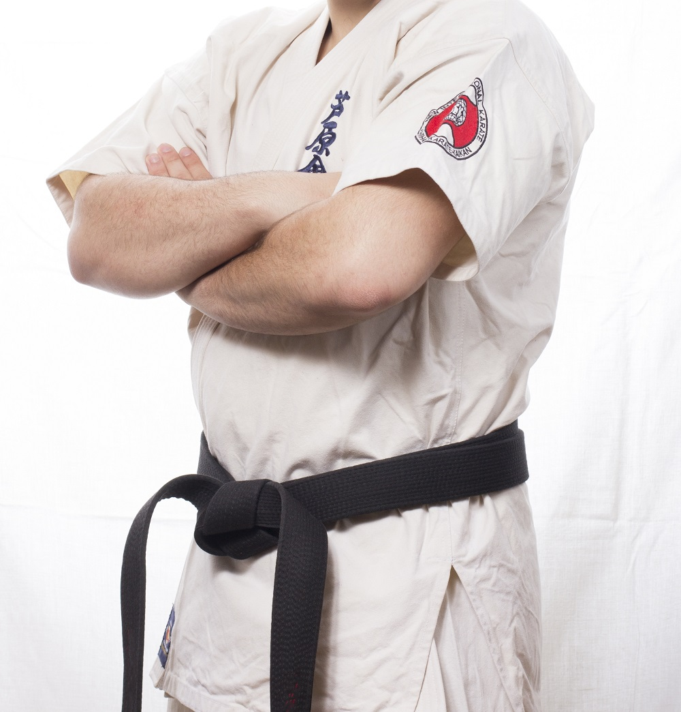
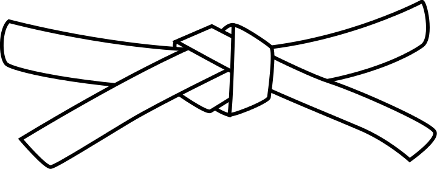
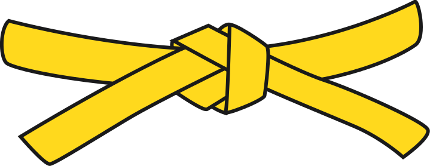
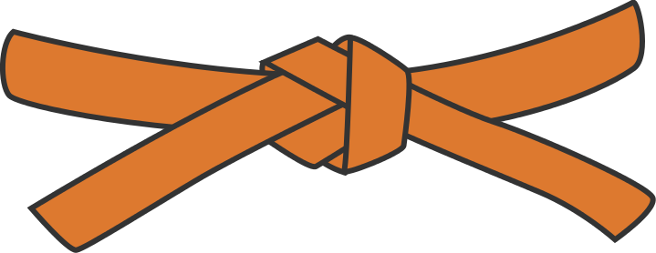
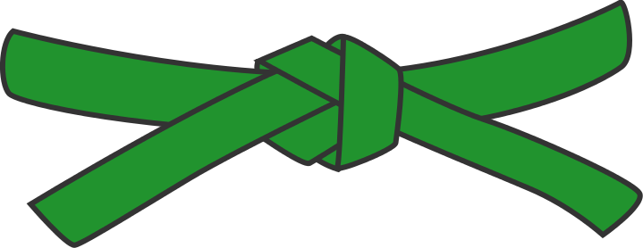
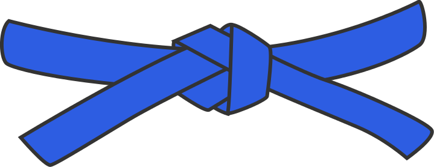

Judo
Le judo est un art martial très réputé. Il peut se pratiquer à tout âge (avec des niveaux adaptés biensur). C'est un exellent sport d'auto-défense mais pas seulement, il permet également aux plus jeune d'apprendre de précieuses valeurs. Il véhicule respect d'autrui et des consignes données. Pour réussir dans cette discipline qui attire surtout pour la compétition, il faudras persévérer car la fédération francaise de judo compte de nombreux membres !
L'objectif du'un combat entre deux judokas est de projeter l'adversaire ou de l'amener au sol de l'imobiliser ou même de le forcer à abandonner avec l'usage de clés articulaires. En judo de compétition, les coups à mains nues, les armes et les frappes ne sont pas autorisées. En combat non officiel, ces pratiques sont régies par un arrangement avant le combat.
Pour pratiquer ce sport, vous n'aurez besoin que d'un Kimono. La ceinture (blanche pour les débutants) vous est généralement remise lors de votre premier cours.
Ci-join une photo de combat de judokas :
Au début, le kimono étais exclusivement blanc, vous vous demandez alors peut être pourquoi certains kimonos sont bleu ? Ce changement a été instauré simplement pour que les téléspéctateurs puissent distinquer du mieux possible les deux judokas lors des combats.
Un judoka peut avoir différent niveaux. Son niveau est indiqué par la couleur de sa ceinture.
Par ordre de niveau (sans les ceintures intermédiaires), on a :
- Ceinture blanche
- Ceinture jaune
- Ceinture orange
- Ceinture verte
- Ceinture bleu
- Ceinture marron
- Ceinture noire

- Ceinture rouge

Le judo a été crée en 1882 par Jigoro Kano. Cet art martial a été inventé en rassemblant des techniques d'autodéfense. le mot judo se décompose en "ju" (signifiant doux) et do (le chemin). Ainsi, ethymologiquement, ce mot signifie "La manière douce". En effet lorsque l'on compare le judo avec le karaté ou le kung fu, ce sport est plus réfléchis et moins violent en étant tout aussi efficace.
Toutes les musiques et Images utilisées à la confection de ce site web sont libres de droits
Musiques utilisées tirées de la Librairie Libre de droits Youtube